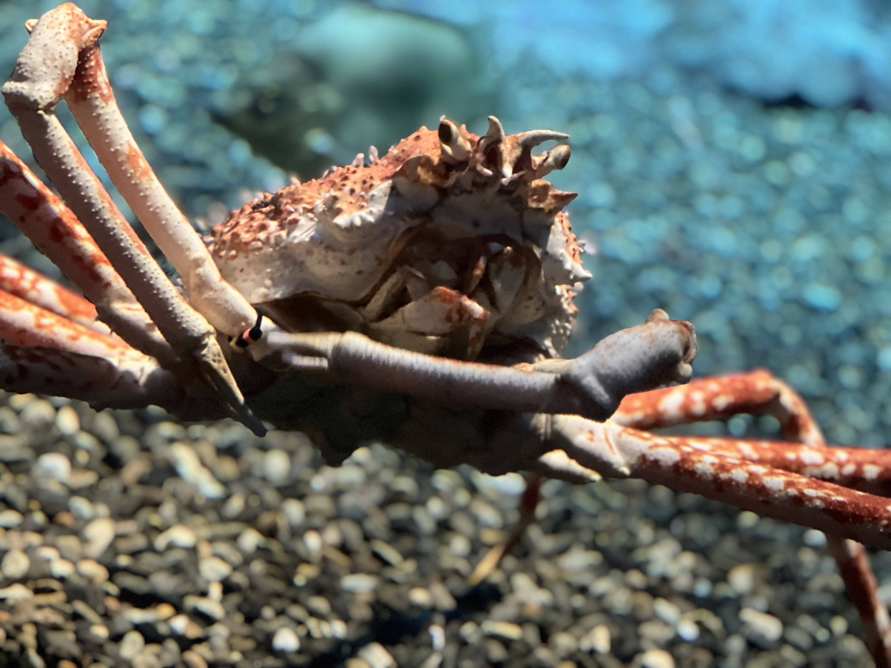
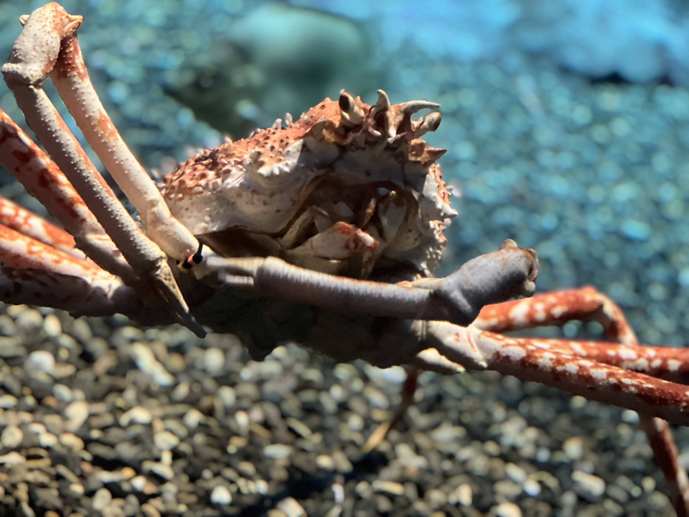

my only trip to asia is in Japan, in the summer of 2024 with me, my mother, my grandmother, and my brother
the trip started with us all driving to the car park area near the airport, we took a shuttle from there to the terminal quite quickly. we got upgraded seats because of an
employee discount, and this was my first time sitting in first class. I now knew where my grandparents had amassed a large sum of chocolates and treats from, as they had a box of
it that they kept filling up, the chair was nice and soft and I probably fell asleep on it.
when we landed in Osaka we noticed right away how hot the climate is there, we spent a while
looking for the hotel. the hotels in japan have free stuff in the lobbies or in the room like toothbrushes and stuff so we took some stuff and sat down in the hotel room, until it
was dark out. we went to dinner in a little corner restaurant and had some chicken skewers and some dish of something that I never remembered what it was.

the next day we visited the Osaka Aquarium which had its main selling point about whale sharks.
it was a fun visit there, there was a lot of fish in a tank around a tunnel, which
was pretty cool, there were some penguins and crabs there.
 
we spent most of our time at the whale shark exhibit

after the main tank area we went to the cafe area, where they were selling 22 inch long hotdogs, and whale shark themed drinks.
At the end of the aquarium, we got to see whale shark
feeding time. we were not allowed our phones or cameras in the area above, so I have no pictures, but there were guys swimming with them with a bucket of whale shark feed, they
held out their arm to prevent them being swallowed and we being steered around by the whale sharks mouth, occasionally tossing handfulls of food in their mouth. we went for a walk around
and went to a cornerstore, then we went back home to wait for our timeslot for a light show at around 1930 hrs.
the light show was just a walk in a dark park with light up beans in the forest, and some lights in the water and some in the grass, with a single projector showing some van Gogh looking art. Winston was a little sick and couldnt come, so he stayed in the hotel and ate ramen noodles, when we returned my grandmother also felt sick and told winston that his discision to stay home was a good idea.
next day we went to kyoto via subway, we stayed in the hotel for an hour or so, and went to see some red gates at a shrine in the area

for dinner we went to a really old restaurant that stayed open only for us because we were the last customers. we got a tour of the house/restaurant thing and they served us duck
or lamb on a plate with many different cuts
from the animal with many different seasonings, and for desert we got a sort of gelatinous bubble with a flower in it. you are supposed to
dip the bubble in a puddle of some sweet black liquid, and brown sugar.

the next day we went to a starbucks around the corner for breakfast, the starbucks we went to is not a regular one, as it had no tables or chairs but we were to sit on the floor and eat
it
had absolutely nothing telling it was starbucks from the outside but it had a regular starbucks interior. after breakfast we went to look at a nearby temple
before going to
tokyo by train, the train was originaly cancelled due to a typhoon, but we went on the next one, which had a power outage and we were stuck for multiple hours,
before we got up and going again.
by the time we arived we were pretty tired so we went straight to the hotel to rest.
we then proceeded to go for dinner at a beef restaurant, then go to the 'tokyo sky tree' which
was a 500 meter tower, which was closed by the time we had got there so once again we
were keeping employees from going home by being there.
over the next few days we went to a massive godzilla head on a tower,
another high up tower, saw some sumo restlers train,
went to an art museum, and visited a one piece store.
if I
remember anything from this trip I will add on to this one.